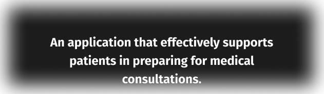

Solutions


An application that effectively supports patients in preparing for medical consultations.

Speziell für Patienten und Patientinnen
EverAsk ist ein digitaler Assistent für bessere Arzt-Patienten-Gespräche.
Solutions

An application that effectively supports patients in preparing for medical consultations.
Rundum-Paket für Arzt-Patienten-Gespräche
EverAsk unterstützt Anwender in Vorbereitung, Durchführung und Nachbereitung des Gesprächs.
Solutions

Einfach, effektiv und effizient
EverAsk leitet Patienten und Patientinnen strukturiert und fasst Ergebnisse übersichtlich zusammen.